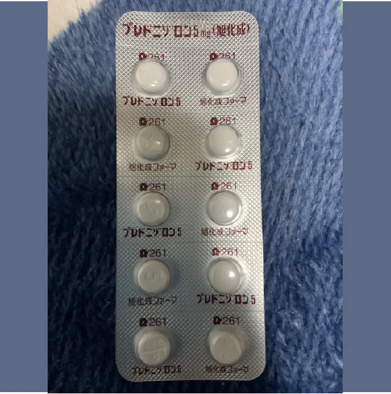
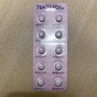
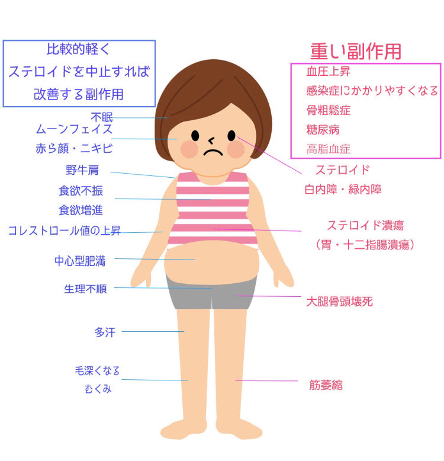

私たちのSLE
笑って生きていくために一緒に考えよう
副腎皮質ステロイド剤

先発品（後発品あり)
副腎皮質ステロイド剤
SLEの症状の管理に有用であり、これらの薬剤には副作用があり、適切な医療専門家の監視の下で使用する必要があります。
ステロイド剤の効果
- 抗炎症作用：細胞内の転写因子である核内受容体に作用し、転写因子の働きを抑制する作用があります。この作用により、炎症反応の進行を抑制し、症状の緩和につながります。
- 抗アレルギー作用：免疫細胞の活性化を抑制し、アレルギー反応を抑制する作用があります。この作用により、アレルギー性皮膚炎や喘息などの症状の緩和につながります。
- 免疫を抑制する働き
- 使用法：経口薬や注射剤などの形で投与されます。投与量や使用期間は、患者の症状や病態に合わせて、医師が適切に決定します
副腎皮質ステロイド剤の代表的な種類
プレドニン
（後発品：プレドニゾロン）
薬価 先発後発ともに9.80円/5mg
室温で保管してください



デカドロン
（一般名：デキサメタゾン）
薬価 5.70円/0.5mg
炎症を抑制する効果があり、より長期間作用するため、短期間の使用での治療に適しています。
コートリル
（一般名：ヒドロコルチゾン）
薬価 7.40円/10mg
プレドニゾロンと同様に一般的なステロイド薬です。
リンデロン
（後発品：ベタメタゾン）
薬価 11.40円/0.5mg
効果は非常に早くすぐに効きます。 排泄も早いと言われます
ステロイドの作用時間と違い
ステロイドの作用時間
短時間作用型 半日弱（8〜12時間）：
コートリル・ソルコーテフ
中時間作用型 1日前後（12〜36時間）：
プレドニン・メドロール
長時間作用型 2日前後（36〜56時間）：
デカドロン・リンデロン
抗炎症作用の違い
コートリル20mgに対して
プレドニン5mgに相当
メドロール4mgに相当
デカドロン0.75mgに相当
リンデロン0.6mgに相当します。
ステロイドの副作用
副作用は、プレドニンの使用量や使用期間によって異なる場合があります。

特に注意すべき副作用
感染症
骨頭無菌性壊死
動脈硬化（心筋梗塞、脳梗塞、動脈瘤、血栓症）
副腎不全、ステロイド離脱症状
消化管障害（出血、潰瘍、穿孔、閉塞）
糖尿病の誘発・増悪
精神神経障害（精神変調・うつ状態・けいれん）
他の注意すべき副作用
生ワクチンによる発症
不活化ワクチンの効果減弱
白内障、緑内障、視力障害、失明
高血圧、浮腫、うっ血性心不全、不整脈
脂質異常症
低K血症
尿路結石、尿中Ca排泄増加
ステロイド筋症
膵炎、肝機能障害
高頻度の軽症副作用
異常脂肪沈着（中心性肥満、ムーンフェース、野牛肩、眼球突出）
ニキビ
ざ瘡、多毛症、皮膚線条、皮膚萎縮、皮下出血、発汗異常
月経異常（周期異常、無月経、過多・過少月経）
食欲亢進、体重増加、さまざまな消化器症状
白血球増加
医師の指示に従って正しい
用法で使用することが重要です。
また、突然の中止は副作用を
引き起こすことがあるため、
使用中には医師の指示を
受ける必要があります。
ステロイドの副作用の時期
- 数時間から（大量投与）：食欲亢進、不眠、うつ、不整脈
- 数日から （中等量以上）：高血圧、不整脈、精神障害、浮腫、高血糖
- 2〜3週間：副腎抑制、コレステロール上昇、耐糖能異常、創傷治療が長引く、ステロイド潰瘍
- 1ヶ月〜2ヶ月（中等量以上）：感染症にかかりやすい、中心性肥満、多毛、ざ瘡、無月経、無菌性骨壊死、ムーンフェイス、緑内障、ステロイド筋症、消化性潰瘍、紫斑、皮膚線条、皮膚萎縮、ステロイド筋症
- 長期（少量でも）：白内障、骨粗鬆症、圧迫骨折、感染症（ウィルス・結核）、結核、二次性副腎不全、動脈硬化
副作用の予防と治療
- 感染症：手洗い、マスク、うがい、栄養状態の維持、ワクチン接種
- 耐糖能異常：血糖測定、間食を控える、適度な運動
- 高血圧：減塩、体重管理、適度な運動
- 脂質異常：体重管理、適度な運動
- 骨粗鬆症：程度な日光浴と運動、Ca,ビタミンDの接種、骨塩の測定、適度なカルシウム摂取、骨粗鬆症の治療薬
- 消化器潰瘍：潰瘍治療薬（特に鎮痛剤を併用しているとき）
- 精神障害（多幸、うつ、過食）：精神科、神経内科的な管理
ステロイド剤の注意点
体調がよくなったと自己判断して使用を中止したり、量を減らしたりすると、発熱、頭痛、食欲不振、脱力感、筋肉痛、関節痛、ショックなどの症状があらわれることがあります。中止する場合は徐々に減量されます。指示どおりに飲み続けることが重要です。
ステロイドの服用には、
医師の指示に従うことが
非常に重要です。
特に、副作用の監視などが重要です。